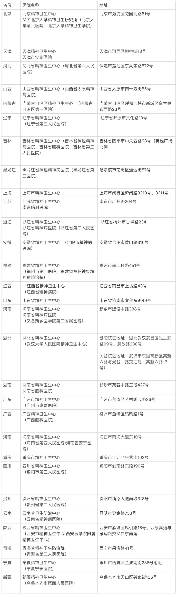
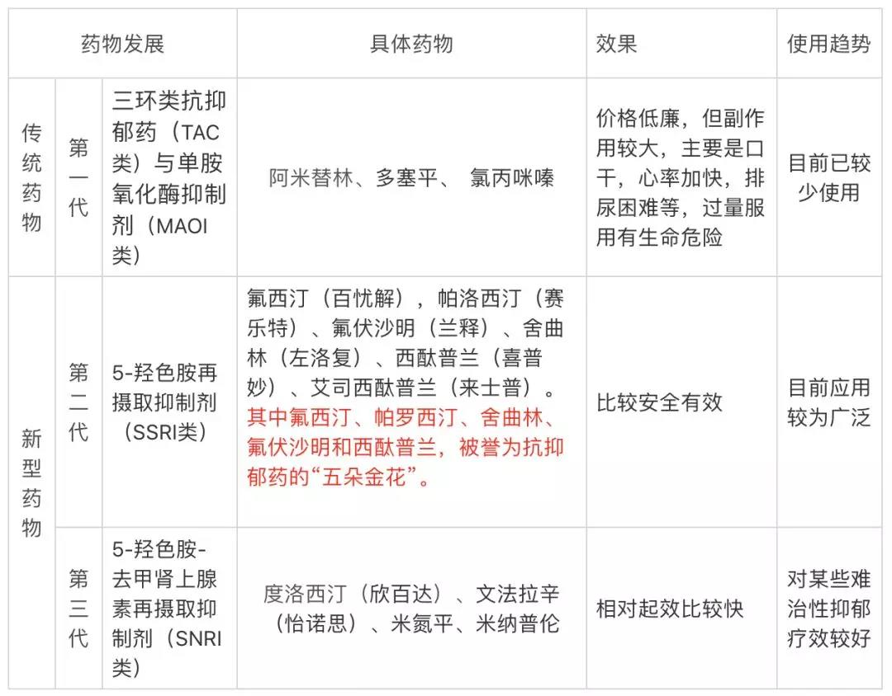
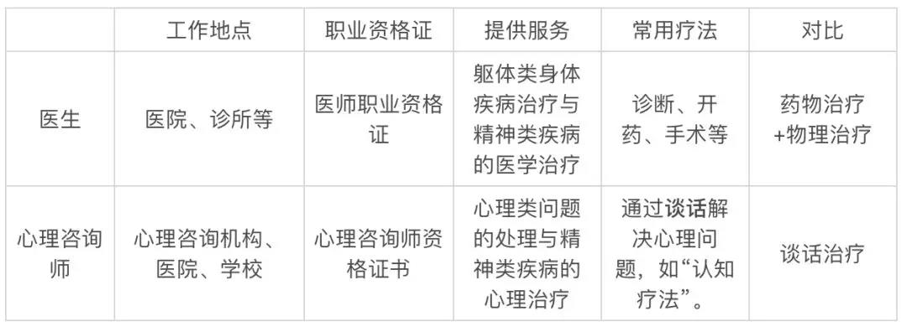
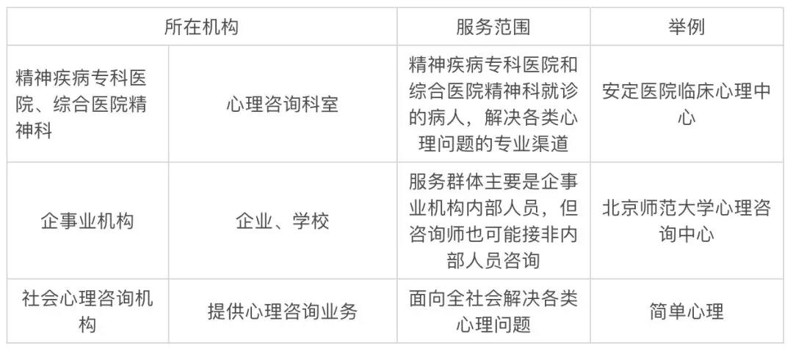

首 页
首 页 量 表
量 表 培 训
培 训 资 讯
资 讯 视 频
视 频 关 于 我 们
关 于 我 们
资讯> 抑郁症就医指南
抑郁症就医指南
抑郁症就医指南
精神类疾病治疗可以去的医院有公立三甲医院或者私立医院，公立医院中又分综合医院和专科医院两种，建议选择精神疾病专科医院。在选择精神专科医院的时候，要尽量选择当地的精神卫生中心挂牌所在的医院，因为当地的精神卫生中心代表着当地精神类疾病治疗的最高水平。以北京为例，推荐的医院有三个一是北京安定医院，它是中国最早的精神专科医院之一；二是北医六院，这是北京精神卫生中心所在医院，代表我国精神学科研究的最高水平之一；三是北京回龙观医院，它是亚洲最大的精神病院之一。
陈述病情一般包括如下内容： 1、你是首诊还是复诊，若是复诊，需要陈述用药后的变化和感受； 2、你这段时间的感觉 ，包括你的情绪，思维变化等； 3、身体呈现的状态，包括有没有身体疾病、行动力等； 4、人际关系呈现的状态； 5、睡眠情况与饮食情况； 6、其他你觉得有必要告诉医生情况，以及你想要问医生的问题。
主流抗抑郁药物简介
虽然没有成瘾性，但是抗抑郁症药物通常有一些副作用，各类抗抑郁药的副作用千差万别，比如有些药会影响食欲和性欲，有些药或导致震颤，头昏，思维变慢等等，有副作用是正常的，但不能因为有副作用就不吃药。比起抑郁症对人的损害，副作用的损害可以忽略不计，两害相权取其轻，还是得吃药。
心理咨询需要注意什么
需要注意的是，医生和心理咨询师是两种不同的职业，有不同的职责，医生会帮你开药看病，但通常不会和你聊很多，这也有现实原因，毕竟在我国每个医生给病人看病时间只有几分钟；而心理咨询师是负责做心理上的疏导，心理咨询师通常会详细地倾听你的问题，通过咨询过程让你实现状态转变。一般人们去看医生的时候，医生都会告诉你，按时吃药，然后自己去找心理咨询师做一下咨询。
去哪找心理咨询师
心理咨询师常用疗法
心理咨询师在治疗抑郁症的时候，常用疗法包括认知行为疗法、人际关系疗法、家庭疗法、正念疗法等等。